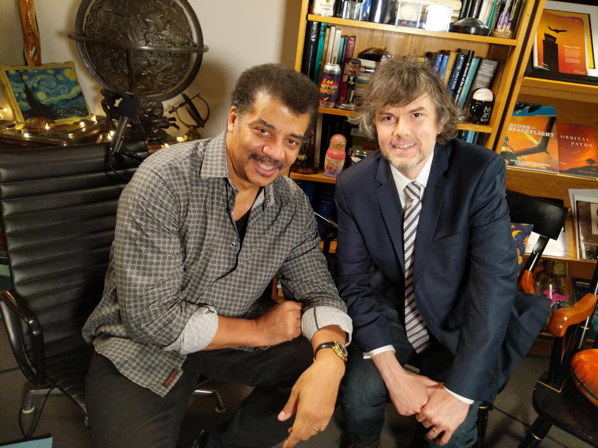

Home | Kenner | Hasbro | LEGO | About 
This website is operated by Jason W. Ellis, who is an Associate Professor of English, Director of the B.S. in Professional and Technical Writing Program, and Coordinator for the City Tech Science Fiction Collection at the New York City College of Technology, CUNY. Formerly, he was a Marion L. Brittain Fellow at the Georgia Institute of Technology where he taught English Composition, Technical Communication, and Science Fiction, and directed the Writing and Communication Program’s Digital Pedagogy Research and Development Lab (DevLab). He holds a Ph.D. in English from Kent State University, M.A. in Science Fiction Studies from the University of Liverpool, and B.S. in Science, Technology, and Culture from Georgia Tech.